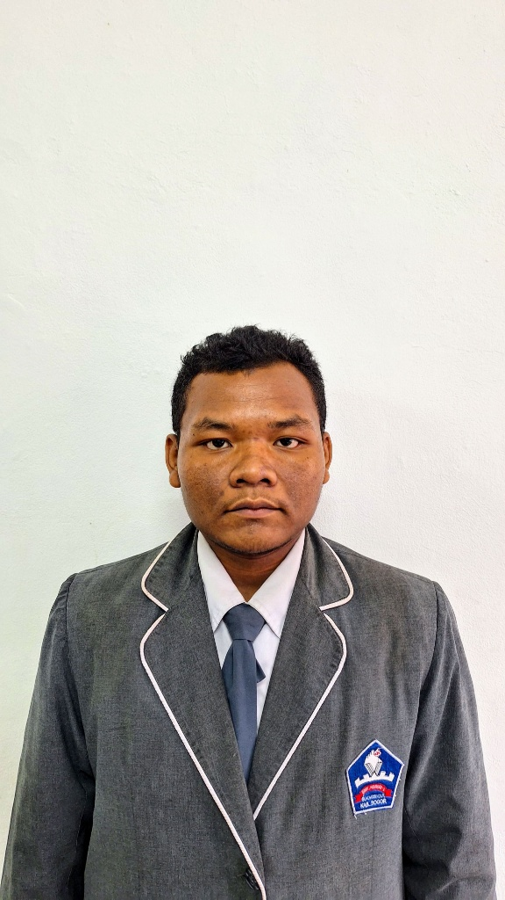

2024 - Sekarang
Universitas Gunadarma
S1 Sistem Komputer
Fokus mempelajari sistem digital, elektronika dasar, jaringan komputer, arsitektur komputer, dan pemrograman perangkat keras.
>_ Embedded Systems & Hardware Enthusiast
Mahasiswa S1 Sistem Komputer di Universitas Gunadarma yang memiliki ketertarikan mendalam pada perangkat keras komputer, sistem tertanam (embedded systems), dan perakitan rangkaian elektronika.

S1 Sistem Komputer
| Nama | Anggraito Husodo |
| NPM / Kelas |
· 3KB05
|
| Alamat | Tangerang, Banten |
S1 Sistem Komputer
Fokus mempelajari sistem digital, elektronika dasar, jaringan komputer, arsitektur komputer, dan pemrograman perangkat keras.
IT Help Desk & Jaringan Komputer
Mendukung operasional IT melalui layanan help desk, konfigurasi & troubleshooting jaringan komputer (LAN/Wi-Fi), serta pemeliharaan perangkat keras.
Teknik Komputer dan Jaringan
Mempelajari dasar perakitan PC, konfigurasi jaringan komputer, serta troubleshooting perangkat keras.
Rangkaian keamanan pintu untuk mendeteksi bukaan pintu dan memicu suara peringatan otomatis melalui buzzer.
Purwarupa dadu elektronik menggunakan pembangkit pulsa dan pencacah untuk menampilkan angka acak pada seven-segment LED display.
Sistem kendali pencahayaan otomatis yang mendeteksi intensitas cahaya ruangan untuk menyalakan lampu secara mandiri.
Tidak ada proyek yang cocok dengan filter atau pencarianmu.
Coba simulasi cara kerja ketiga rangkaian elektronika langsung di browser.
Menekan Push Button memicu pulsa clock dari IC NE555 ke IC Counter & decoder untuk menyalakan segmen LED (a–g) secara cepat sebelum berhenti di angka acak 1–6.
Geser intensitas cahaya ruangan dan atur sensitivitas potensiometer. Saat cahaya lebih rendah dari ambang batas, transistor mengaktifkan relay dan menyalakan lampu.
Aktifkan sistem keamanan (Armed), lalu simulasikan pintu dibuka. Saat sensor mendeteksi celah pintu terbuka, buzzer berbunyi dan LED indikator berkedip.
Klik salah satu badge untuk melihat keterangan singkatnya.
Mengulik spesifikasi komponen PC, arsitektur perangkat keras, dan tren teknologi terkini.
Merangkai purwarupa sensor, aktuator, dan sistem otomasi sederhana.
Menikmati anime, musik Jepang, dan budaya pop sebagai hiburan di waktu luang.
Terbuka untuk diskusi seputar perkuliahan, proyek praktikum elektronika, maupun kolaborasi teknologi: